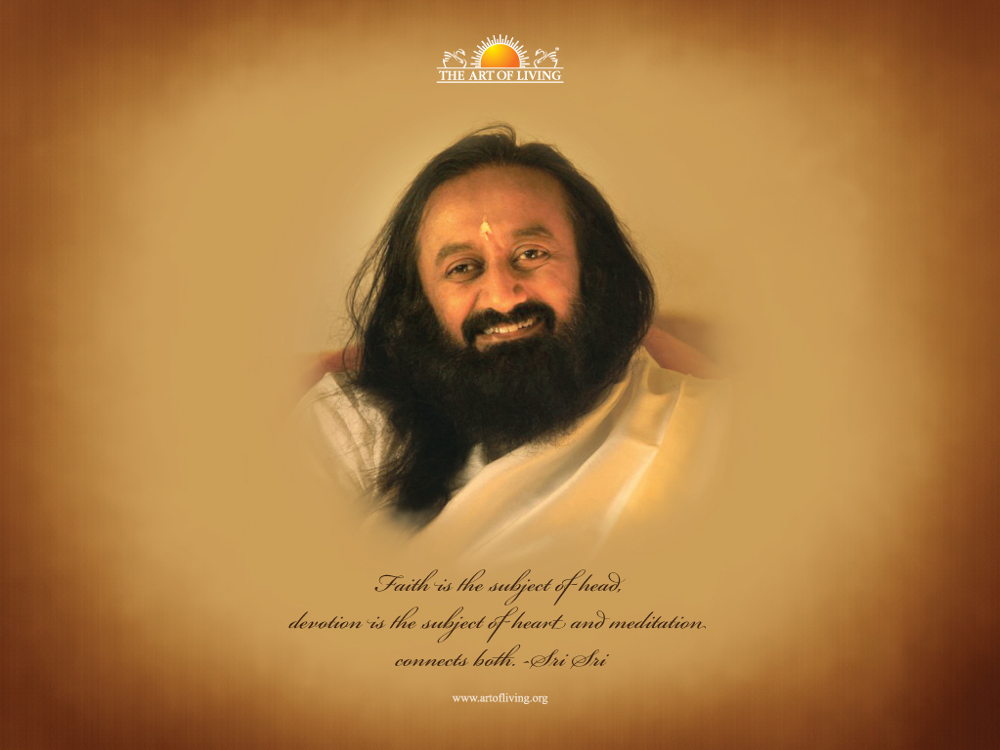

We serve society by strengthening the individual Operating in 156 countries, The Art of Living is a non-profit, educational and humanitarian organization founded in 1981 by the world-renowned humanitarian and spiritual teacher - Gurudev Sri Sri Ravi Shankar. All our programs are guided by Gurudev’s philosophy: “Unless we have a stress-free mind and a violence-free society, we cannot achieve world peace.” The Art of Living community is diverse and attracts people from all walks of life.
Gurudev Sri Sri Ravi Shankar has united people of different races, traditions, economic and social status, and nationalities. This community, spanning 156 countries, has created a one-world spiritual family. Gurudev’s message is simple: “Love and wisdom can prevail over hatred and violence.” This message is not just a slogan, but through The Art of Living has been and continues to be translated into action and results. The Art of Living is an organization with one of the largest volunteer bases in the world. The international headquarters is located in Bangalore, India. Globally, the organization operates as The Art of Living Foundation formed in 1989 in the United States of America and in Germany. Since then, local centers have been established across the world.In the Art of Living’s organizational structure, there is a board of trustees with a term of two years. Two-thirds of the trustees change every two years. All the Art of Living teachers and the previous trustees are allowed to nominate a new board. There is a provision for an advisory board that monitors and guides the organization. All the accounts are regularly audited by an external auditor. Other than expenses, no trustee is entitled to benefits in terms of salary or benefits. The Art of Living programs directly help to fund its humanitarian projects. The proceeds from the sales of The Art of Living Publications and Ayurveda products are also directed to the social initiatives.
